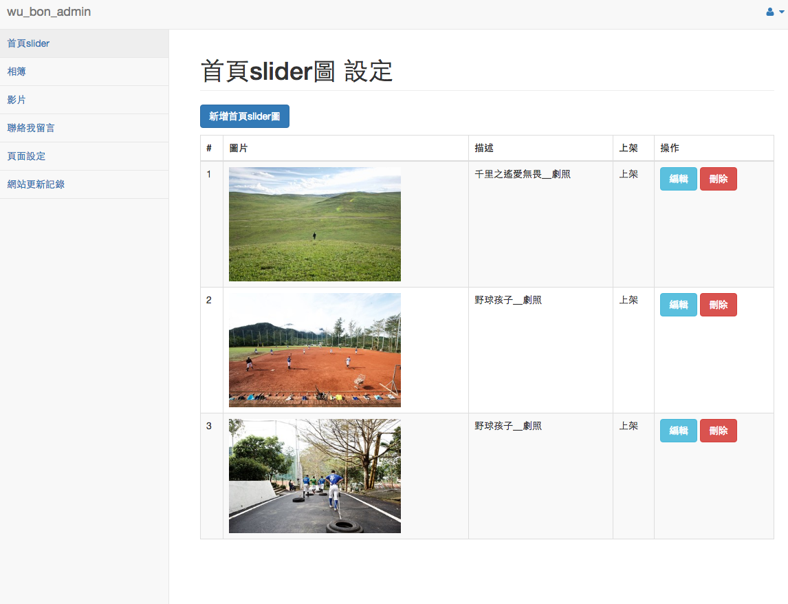

文章分享
後台 面板 網站
- 2016-07-02
- Ming yu
- web
[前言...]
因為朋友想要建立一個自己的作品網站。就在工作閒暇時間，幫忙製作網站。整個網站從雲端主機租借、架設到前台畫面規劃，都是獨自完成。
不過因為是閒暇時間製作，所以目前還在修改中。且該網站目前沒有RWD設計。之後會再慢慢補上。
首頁，採用捲軸圖片設計，可控制下面的 拉bar 來調整顯示圖片區域

相簿頁以及影片頁的縮圖設定在不同時間跳出，增加網頁活潑性。預計會使用瀑布流方式。
聯絡我頁面也採用簡單明理的方式，方便使用者不會混淆。
後台採用 bootstrap admin 面板做修改。方便管理員未來使用以及擴充功能。

歡迎參觀，對他的影像紀錄有興趣，也歡迎直接聯繫！
傳送門：Bon Images